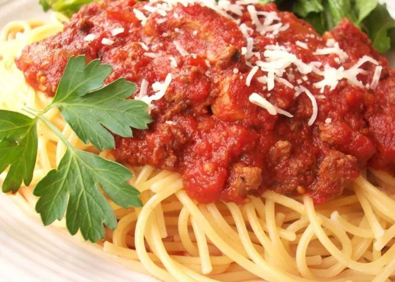

Spaghetti Bolognese
home

Description
Here's one for the slow cooker. It combines ground beef and Italian sausage.
This creates a great, chunky, and very meaty spaghetti sauce.
The longer it cooks, the better it tastes!
Ingredients
- 2 tablespoons olive oil
- 1/4 of a pound of bulk Italian sausage
- 2 small onions, chopped
- 1 pound of ground beef
- 1 teaspoon of dried Italian herb seasoning
- 2 teaspoon of garlic powder
- 1/2 a teaspoon of dried marjoram
- 1 (29 ounce) can of tomato soup
- 1 (14.5 ounce) can of Italian-style diced tomatoes
- 1 (6 ounce) can tomato paste
- 1/2 a teaspoon of dried oregano
- 1/4 of a teaspoon of dried thyme leaves
- 1/4 of a teaspoon of dried basil
- 1 tablespoon of white sugar
Steps
- Heat olive oil in a skillet over medium heat. Add Italian sausage and onion; cook and stir until sausage is browned, about 10 minutes. Transfer sausage and onions to a slow cooker.
- Add ground beef to the same skillet over medium heat; season with Italian seasoning, 1 teaspoon of garlic powder, and marjoram. Cook and stir until beef is browned and crumbly, about 10 minutes. Transfer ground beef into the slow cooker.
- Stir in tomato sauce, diced tomatoes, stewed tomatoes, tomato paste, 2 teaspoons garlic powder, oregano, thyme, and basil. Cover and cook on Low for 8 hours. Stir in sugar 15 minutes before serving.